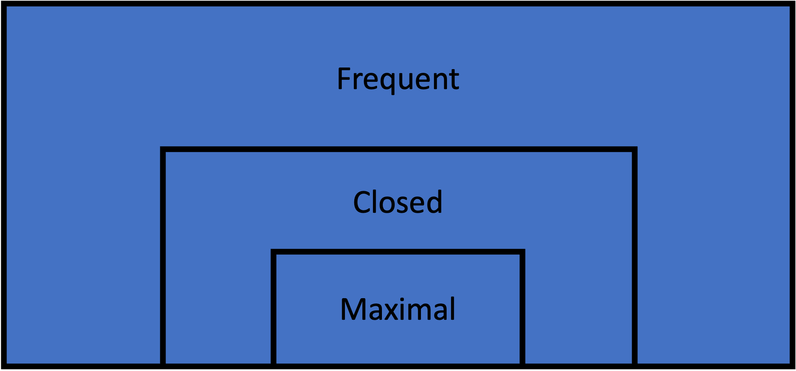

Frequent Itemset Mining

Description
Frequent itemset mining is a fundamental technique in data mining focused on discovering itemsets that appear frequently in a transactional dataset. A frequent itemset is a set of items that occurs together in the data with a frequency no less than a specified minimum support threshold. Frequent itemsets form the basis of various data mining tasks, including association rule mining, sequential pattern mining, and correlation analysis.
The one caveat with frequent itemset mining is that depending on the support parameter and the structure of the data, these mining techniques can yield large numbers of patterns, especially in dense datasets or with low support thresholds. This challenge has led to the development of more concise representations like closed and maximal itemset mining.
Formal Definition
Let:
- $I$ be the set of all items in the dataset
- $X$ be an itemset, where $X \subseteq I$
- $D$ be the set of all transactions in the dataset
- $\sigma(X)$ be the support of itemset $X$ in $D$
- $\sigma_{min}$ be the minimum support threshold
Then, an itemset $X$ is a maximal frequent itemset if and only if: 1. The support of $X$ is greater than or equal to the minimum support threshold:
\[\sigma(X) \geq \sigma_{min}\]
Thus, $FI$, the set of all maximal frequent itemsets in $I$ can be expressed as:
\[FI = {X \mid X \subseteq I \wedge \sigma(X) \geq \sigma_{min}}\]
Algorithms
ECLAT
The eclat function implements the [E]quivalence [CLA]ss [T]ransformation algorithm for frequent itemset mining proposed by Mohammad Zaki in 2000. This algorithm identifies frequent itemsets in a dataset utilizing a column-first search and supplied minimum support.
RuleMiner.eclat — Methodeclat(txns::Transactions, min_support::Union{Int,Float64})::DataFramePerform frequent itemset mining using the ECLAT (Equivalence CLAss Transformation) algorithm on a transactional dataset.
ECLAT is an efficient algorithm for discovering frequent itemsets, which are sets of items that frequently occur together in the dataset.
Arguments
txns::Transactions: ATransactionsobject containing the dataset to mine.min_support::Union{Int,Float64}: The minimum support threshold. If anInt, it represents the absolute support. If aFloat64, it represents relative support.
Returns
A DataFrame containing the discovered frequent itemsets with the following columns:
Itemset: Vector of item names in the frequent itemset.Support: Relative support of the itemset.N: Absolute support count of the itemset.Length: Number of items in the itemset.
Algorithm Description
The ECLAT algorithm uses a depth-first search strategy and a vertical database layout to efficiently mine frequent itemsets. It starts by computing the support of individual items, sorts them in descending order of frequency, and then recursively builds larger itemsets. ECLAT's depth-first approach enables it to quickly identify long frequent itemsets, and it is most efficient for sparse datasets
Example
txns = Txns("transactions.txt", ' ')
# Find frequent itemsets with 5% minimum support
result = eclat(txns, 0.05)
# Find frequent itemsets with minimum 5,000 transactions
result = eclat(txns, 5_000)References
Zaki, Mohammed. “Scalable Algorithms for Association Mining.” Knowledge and Data Engineering, IEEE Transactions On 12 (June 1, 2000): 372–90. https://doi.org/10.1109/69.846291.
FP-Growth
The fpgrowth function implements the FP-Growth ([F]requent [P]attern Growth) algorithm for mining frequent itemsets. This algorithm, proposed by Han et al. in 2000, is an efficient method for discovering frequent itemsets in a dataset without candidate generation. It is generally more efficient than other algorithms when datasets are dense, as the internal FP tree data structure it builds efficiently summarizes the relationships and supports of the itemsets.
RuleMiner.fpgrowth — Methodfpgrowth(data::Union{Transactions,FPTree}, min_support::Union{Int,Float64})::DataFrameIdentify frequent itemsets in a transactional dataset or an FP-tree with the FPGrowth algorithm.
Arguments
data::Union{Transactions,FPTree}: Either aTransactionsobject containing the dataset to mine, or a pre-constructedFPTreeobject.min_support::Union{Int,Float64}: The minimum support threshold. If anInt, it represents the absolute support. If aFloat64, it represents relative support.
Returns
DataFrame: A DataFrame containing the frequent itemsets, with columns:Itemset: The items in the frequent itemset.Support: The relative support of the itemset as a proportion of total transactions.N: The absolute support count of the itemset.Length: The number of items in the itemset.
Description
The FPGrowth algorithm is a mining technique that builds a compact summary of the transaction data called an FP-tree. This tree structure summarizes the supports and relationships between items in a way that can be easily traversed and processed to find frequent itemsets. FPGrowth is particularly efficient for datasets with long transactions or sparse frequent itemsets.
The algorithm operates in two main phases:
FP-tree Construction: Builds a compact representation of the dataset, organizing items by their frequency to allow efficient mining. This step is skipped if an FPTree is provided.
Recursive Tree Traversal:
- Processes itemsets from least frequent to most frequent.
- For each item, creates a conditional FP-tree and recursively mines it.
Example
# Using a Transactions object
txns = Txns("transactions.txt", ' ')
result = fpgrowth(txns, 0.05) # Find frequent itemsets with 5% minimum support
# Using a pre-constructed FPTree
tree = FPTree(txns, 5000) # Construct FP-tree with minimum support of 5000
result = fpgrowth(tree, 6000) # Find frequent itemsets with minimum support of 6000References
Han, Jiawei, Jian Pei, and Yiwen Yin. "Mining Frequent Patterns without Candidate Generation." SIGMOD Rec. 29, no. 2 (May 16, 2000): 1–12. https://doi.org/10.1145/335191.335372.
Frequent Itemset Recovery
Recover from closed itemsets
Closed itemsets can be used to recover all frequent itemsets by generating combinations from the mined itemsets along with their supports. This can be accomplished thorugh the levelwise algorithm proposed by Pasquier et al. in 1999.
The recover_closed function implements the levelwise algorithm for recovering frequent itemsets from closed itemsets. This algorithm generates all subsets of the closed itemsets, derives their supports, and then returns the results. This particular implementation is designed to take an output DataFrame from the various closed itemset mining algorithms in this package. Without the original transactions dataset, its input and return values can only handle absolute support (N), rather than both relative support and absolute support.
RuleMiner.recover_closed — Methodrecover_closed(df::DataFrame, min_n::Int)::DataFrameRecover frequent itemsets from a DataFrame of closed itemsets.
Arguments
df::DataFrame: A DataFrame containing the closed frequent itemsets, with columns:Itemset: The items in the closed frequent itemset.Support: The relative support of the itemset as a proportion of total transactions.N: The absolute support count of the itemset.Length: The number of items in the itemset.
min_n::Int: The minimum support threshold for the rules. This is the absolute (integer) support.
Returns
DataFrame: A DataFrame containing all frequent itemsets, with columns:Itemset: The items in the frequent itemset.N: The absolute support count of the itemset.Length: The number of items in the itemset.
Description
This function recovers all frequent itemsets from a set of closed itemsets. It generates all possible subsets of the closed itemsets and calculates their supports based on the smallest containing closed itemset.
The function works as follows:
- It filters the input DataFrame to only include closed sets above the minimum support.
- For each length k from 1 to the maximum itemset length: a. It generates all k-subsets of the closed itemsets. b. For each subset, it finds the smallest closed itemset containing it. c. It assigns the support of the smallest containing closed itemset to the subset.
- It combines all frequent itemsets and their supports into a result DataFrame.
Example
txns = Txns("transactions.txt", ' ')
# Find closed frequent itemsets with minimum 5,000 transactions
closed_sets = fpclose(txns, 5_000)
# Recover frequent itemsets from the closed itemsets
frequent_sets = recover_closed(closed_sets, 5_000)References
Pasquier, Nicolas, Yves Bastide, Rafik Taouil, and Lotfi Lakhal. "Efficient Mining of Association Rules Using Closed Itemset Lattices." Information Systems 24, no. 1 (March 1, 1999): 25–46. https://doi.org/10.1016/S0306-4379(99)00003-4.
Recover from maximal itemsets
Like closed itemsets, maximal itemsets can be used to recover all frequent itemsets, however unlike with closed itemsets, the supports of the itemsets cannot be recovered.
The recover_maximal performs this recovery by finding all subsets of the maximal itemsets and returns a DataFrame of the itemset and length.
RuleMiner.recover_maximal — Methodrecover_maximal(df::DataFrame)::DataFrameRecover all frequent itemsets from a DataFrame of maximal frequent itemsets.
Arguments
df::DataFrame: A DataFrame containing the maximal frequent itemsets, with columns:Itemset: The items in the maximal frequent itemset.Length: The number of items in the itemset.
Returns
DataFrame: A DataFrame containing all frequent itemsets, with columns:Itemset: The items in the frequent itemset.Length: The number of items in the itemset.
Description
This function takes a DataFrame of maximal frequent itemsets and generates all possible subsets (including the maximal itemsets themselves) to recover the complete set of frequent itemsets. It does not calculate or recover support values, as these cannot be determined from maximal itemsets alone.
The function works as follows:
- For each maximal itemset, it generates all possible subsets.
- It combines all these subsets into a single collection of frequent itemsets.
- It removes any duplicate itemsets that might arise from overlapping maximal itemsets.
- It returns the result as a DataFrame, sorted by itemset length in descending order.
Example
txns = Txns("transactions.txt", ' ')
# Find maximal frequent itemsets with minimum 5,000 transactions
maximal_sets = fpmax(txns, 5_000)
# Recover frequent itemsets from the maximal itemsets
frequent_sets = recover_maximal(maximal_sets)